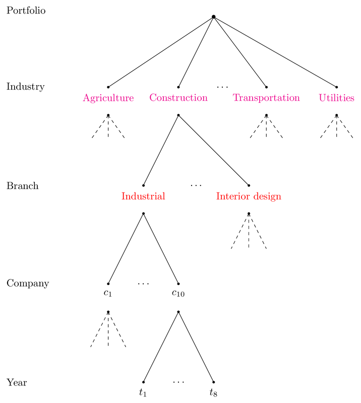
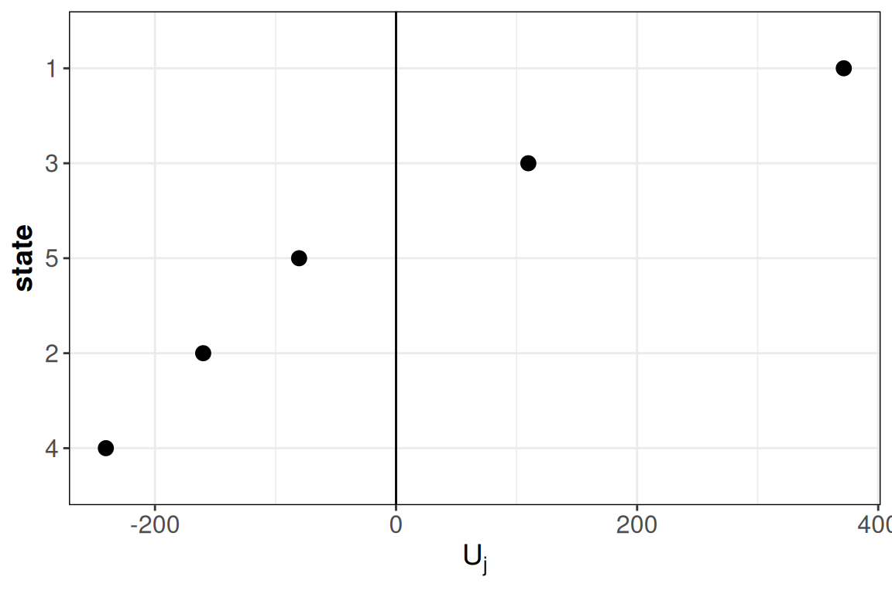
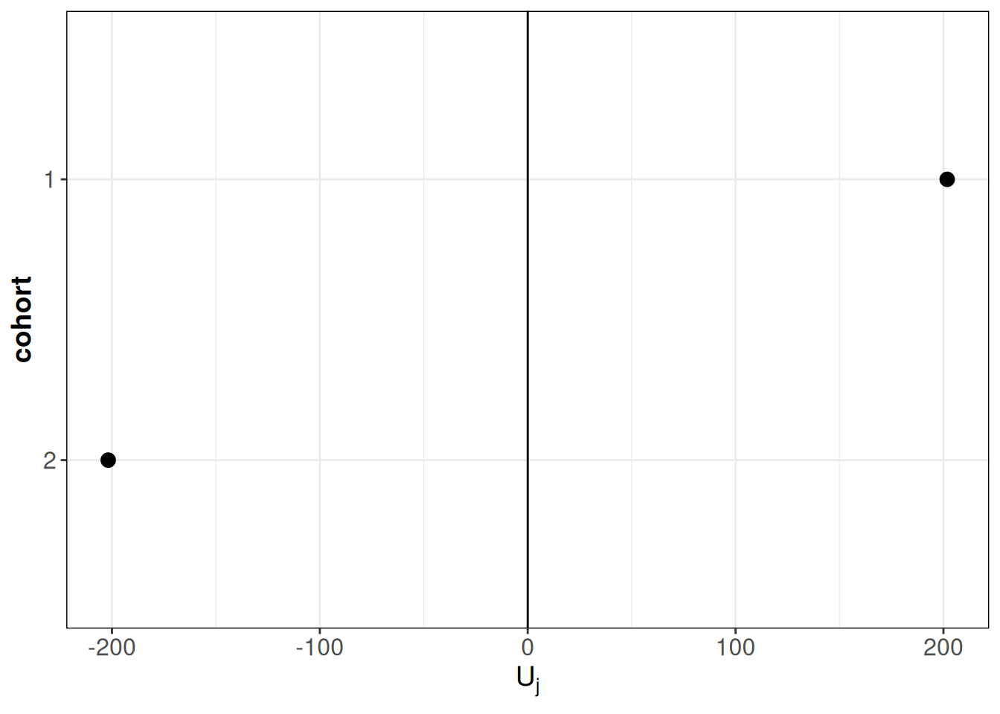
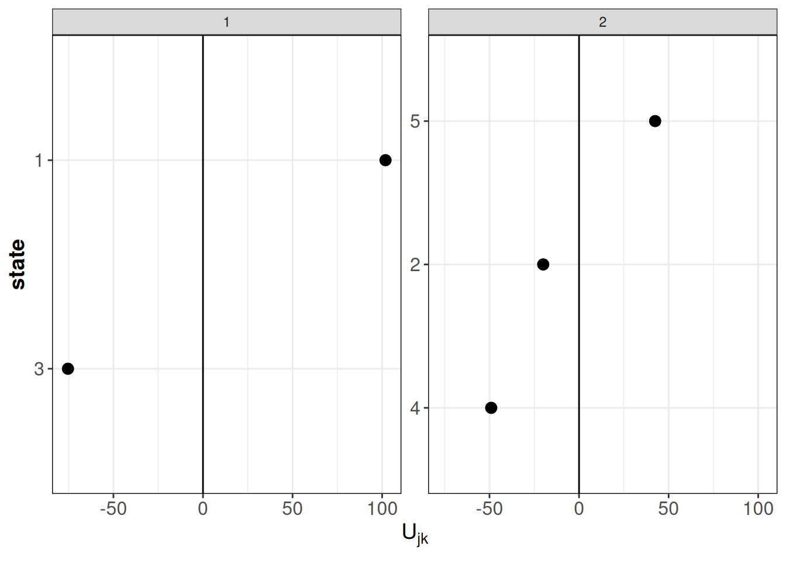

actuaRE.Rmd
In this document, we give you a brief overview of the basic functionality of the actuaRE package. For a more detailed overview of the functions, you can consult the help-pages. Please feel free to send any suggestions and bug reports to the package author.
The actuaRE package provides a comprehensive toolkit for handling both single-level and hierarchical multi-level factors:
| Model Type | Function | Description |
|---|---|---|
| Single-level credibility | buhlmannStraub |
Buhlmann-Straub credibility model |
| Single-level GLM + credibility | buhlmannStraubGLM |
Combines Buhlmann-Straub with GLM (fixed \(p\)) |
| Single-level GLM + credibility | buhlmannStraubTweedie |
Combines Buhlmann-Straub with GLM (estimates \(p\)) |
| Hierarchical credibility | hierCredibility |
Jewell’s hierarchical credibility model |
| Hierarchical GLM + credibility | hierCredGLM |
Combines hierarchical credibility with GLM (fixed \(p\)) |
| Hierarchical GLM + credibility | hierCredTweedie |
Combines hierarchical credibility with GLM (estimates \(p\)) |
| Generalized Linear Mixed Model | tweedieGLMM |
Tweedie GLMM with credibility-based initial estimates |
All models support both additive and multiplicative formulations and share common S3 methods: summary, fitted, predict, fixef, ranef, weights, and plotRE.
Multi-level factors (MLFs) are nominal variables with too many levels for ordinary generalized linear model (GLM) estimation (Ohlsson and Johansson 2010). Within the machine learning literature, these type of risk factors are better known as high-cardinality attributes (Micci-Barreca 2001). This package allows to incorporate both a single MLF and MLFs that have a hierarchical structure. A typical example of the latter, within workers’ compensation insurance, is the NACE code with a hierarchical structure of industry and branch. Further, the package allows to combine the MLF with contract-specific covariates.
The actuaRE package supports two types of random effects structures: single-level random effects and hierarchical or nested random effects.
For a single MLF (e.g., clusters, states, or lines of business), we can fit models of the form:
\[\begin{align*} g(E[Y_{ijt} | U_j]) &= \mu + \boldsymbol{x}_{ijt}^\top \boldsymbol{\beta} + U_j \\&= \zeta_{ijt}.\\ \end{align*}\]
Here, \(Y_{ijt}\) denotes the loss cost of risk profile \(i\) (based on the contract-specific risk factors) operating in cluster \(j\) at time \(t\). We calculate the loss cost as
\[\begin{align*} Y_{ijt} = \frac{Z_{ijt}}{w_{ijt}} \end{align*}\] where \(Z_{ijt}\) denotes the total claim cost and \(w_{ijt}\) is an appropriate volume measure (i.e., the exposure). \(g(\cdot)\) denotes the link function (for example the identity or log link), \(\mu\) the intercept, \(\boldsymbol{x}_{ijt}\) the contract-specific covariate vector and \(\boldsymbol{\beta}\) the corresponding parameter vector. The random effect \(U_j\) captures the unobservable effect of cluster \(j\). We assume that the random cluster effects \(U_j\) are independent and identically distributed (i.i.d.) with \(E[U_j] = 0\) and \(\mathrm{Var}(U_j) = \tau^2\).
For hierarchically structured MLFs, we fit models with two nested levels. In our illustration, we work with a hierarchical MLF that has two hierarchical levels: industry and branch. Figure 1 visualizes this hierarchical structure with a hypothetical example.
Figure 2.1: Figure 1: Hierarchical structure of a hypothetical example

The hierarchical model has the functional form:
\[\begin{align*} g(E[Y_{ijkt} | U_j, U_{jk}]) &= \mu + \boldsymbol{x}_{ijkt}^\top \boldsymbol{\beta} + U_j + U_{jk} \\&= \zeta_{ijkt}.\\ \end{align*}\]
Here, \(Y_{ijkt}\) denotes the loss cost of risk profile \(i\) operating in branch \(k\) within industry \(j\) at time \(t\). \(U_j\) denotes the industry-specific deviation from \(\mu + \boldsymbol{x}_{ijkt}^\top \boldsymbol{\beta}\) and \(U_{jk}\) denotes the branch-specific deviation from \(\mu + \boldsymbol{x}_{ijkt}^\top \boldsymbol{\beta} + U_{j}\). We assume that the random industry effects \(U_j\) are i.i.d. with \(E[U_j] = 0\) and \(\mathrm{Var}(U_j) = \tau^2\). Similarly, the random branch effects \(U_{jk}\) are assumed to be i.i.d. with \(E[U_{jk}] = 0\) and \(\mathrm{Var}(U_{jk}) = \nu^2\).
This package offers three different estimation methods to estimate the model parameters:
- Credibility models: Buhlmann-Straub (Bühlmann and Gisler 2006) for single-level and hierarchical credibility (Jewell 1975) for two-level structures
- Combining credibility models with a GLM (Ohlsson 2008)
- Mixed models (Molenberghs and Verbeke 2005)
To illustrate the functions, we use different data sets. We illustrate the credibility models using the Hachemeister (Hachemeister 1975) data set. The GLM-based methods and GLMMs use the tweedietraindata and tweedietesdata data sets.
To estimate the parameters for a single-level random effects structure, we use the Buhlmann-Straub credibility model using the function buhlmannStraub. By default, the additive credibility model is fit:
\[\begin{align*} E[Y_{ijt} | U_j] &= \mu + U_j. \end{align*}\]
capture.output(library(actuaRE), file = tempfile()) # suppress startup message
library(actuar)
data("hachemeister")
# Reshape to long format for single state analysis
X = as.data.frame(hachemeister)
Df = reshape(X, idvar = "state",
varying = list(paste0("ratio.", 1:12), paste0("weight.", 1:12)),
direction = "long")
fitBS = buhlmannStraub(ratio.1, weight.1, state, Df)
fitBS
#> Call:
#> buhlmannStraub(Yijt = ratio.1, wijt = weight.1, MLFj = state,
#> data = Df)
#>
#>
#> Additive Buhlmann-Straub credibility model
#>
#> Estimated variance parameters:
#> Sigma (within-group variance): 139120026
#> Tau (between-group variance): 89638.73
#>
#> Unique number of state: 5To get a summary of the model fit, we use the summary function.
summary(fitBS)
#> Call:
#> buhlmannStraub(Yijt = ratio.1, wijt = weight.1, MLFj = state,
#> data = Df)
#>
#>
#> Additive Buhlmann-Straub credibility model
#>
#> Estimated variance parameters:
#> Sigma (within-group variance): 139120026
#> Tau (between-group variance): 89638.73
#> Unique number of state: 5
#>
#> Estimates at the state level:
#>
#> Key: <state>
#> state Yj_Bar wj nj zj Vj Uj
#> <num> <num> <num> <int> <num> <num> <num>
#> 1: 1 2060.921 100155 12 0.9847404 2055.165 371.45191
#> 2: 2 1511.224 19895 12 0.9276352 1523.706 -160.00716
#> 3: 3 1805.843 13735 12 0.8984754 1793.444 109.73017
#> 4: 4 1352.976 4152 12 0.7279092 1442.967 -240.74689
#> 5: 5 1599.829 36110 12 0.9587911 1603.285 -80.42803To obtain the fitted values, we use the fitted function
and we use ranef to extract the predicted random effects.
ranef(fitBS)
#> $MLFj
#> Key: <state>
#> state Uj
#> <num> <num>
#> 1: 1 371.45191
#> 2: 2 -160.00716
#> 3: 3 109.73017
#> 4: 4 -240.74689
#> 5: 5 -80.42803We can visualize and the predicted random effects using the function plotRE.
plotRE(fitBS, plot = FALSE)
#> $ggMLFj
To obtain predictions for a new data frame, we use the predict function.
newDt = Df[sample(1:nrow(Df), 5, FALSE), ]
predict(fitBS, newDt)
#> [1] 1523.706 1523.706 1793.444 1793.444 1603.285With the package, we can also fit the multiplicative Buhlmann-Straub credibility model
\[\begin{align*}
E[Y_{ijt} | \widetilde{U}_j] &= \tilde{\mu} \ \widetilde{U}_j
\end{align*}\]
by specifying type = "multiplicative".
fitBSMult = buhlmannStraub(ratio.1, weight.1, state, Df, type = "multiplicative")
fitBSMult
#> Call:
#> buhlmannStraub(Yijt = ratio.1, wijt = weight.1, MLFj = state,
#> data = Df, type = "multiplicative")
#>
#>
#> Multiplicative Buhlmann-Straub credibility model
#>
#> Estimated variance parameters:
#> Sigma (within-group variance): 139120026
#> Tau (between-group variance): 89638.73
#>
#> Unique number of state: 5To estimate the parameters for a hierarchical structure using the hierarchical credibility model, we use the function hierCredibility. By default, the additive hierarchical credibility model (Dannenburg, Kaas, and Goovaerts 1996) is fit
\[\begin{align*} E[Y_{ijkt} | U_j, U_{jk}] &= \mu + U_j + U_{jk}. \end{align*}\]
data("hachemeisterLong")
fitHC = hierCredibility(ratio, weight, cohort, state, hachemeisterLong)
fitHC
#> Call:
#> hierCredibility(Yijkt = ratio, wijkt = weight, sector = cohort,
#> group = state, data = hachemeisterLong)
#>
#>
#> Additive hierarchical credibility model
#>
#> Estimated variance parameters:
#> Individual contracts: 139120026
#> Var(V[jk]): 11628.45
#> Var(V[j]): 88476.11
#> Unique number of categories of cohort: 2
#> Unique number of categories of state: 5To fit the multiplicative hierarchical credibility model (Ohlsson 2005)
\[\begin{align*}
E[Y_{ijkt} | \widetilde{U}_j, \widetilde{U}_{jk}] &= \tilde{\mu} \ \widetilde{U}_j \ \widetilde{U}_{jk}
\end{align*}\]
you have to specify type = "multiplicative".
fitHCMult = hierCredibility(ratio, weight, cohort, state, hachemeisterLong, type = "multiplicative")
fitHCMultSimilarly to before, we use the summary function to get a summary of the model fit.
summary(fitHC)
#> Call:
#> hierCredibility(Yijkt = ratio, wijkt = weight, sector = cohort,
#> group = state, data = hachemeisterLong)
#>
#>
#> Additive hierarchical credibility model
#>
#> Estimated variance parameters:
#> Individual contracts: 139120026
#> Var(V[jk]): 11628.45
#> Var(V[j]): 88476.11
#> Unique number of categories of cohort: 2
#> Unique number of categories of state: 5
#>
#> Estimates at the cohort level:
#>
#> Key: <cohort>
#> cohort zj Yjz_BarTilde qj Vj Uj
#> <num> <num> <num> <num> <num> <num>
#> 1: 1 1.427755 1965.436 0.9157058 1946.859 201.8044
#> 2: 2 1.633248 1527.011 0.9255216 1543.250 -201.8044
#>
#> Estimates at the state level:
#>
#> Key: <cohort, state>
#> cohort state wjk Yjk_BarTilde zjk Vjk Ujk
#> <num> <num> <num> <num> <num> <num> <num>
#> 1: 1 1 100155 2060.921 0.8932938 2048.750 101.89107
#> 2: 1 3 13735 1805.843 0.5344614 1871.491 -75.36785
#> 3: 2 2 19895 1511.224 0.6244749 1523.251 -19.99963
#> 4: 2 4 4152 1352.976 0.2576359 1494.229 -49.02155
#> 5: 2 5 36110 1599.829 0.7511373 1585.748 42.49796To obtain the fitted values, we use the fitted function
and we use ranef to extract the predicted random effects.
ranef(fitHC)
#> $sector
#> Key: <cohort>
#> cohort Uj
#> <num> <num>
#> 1: 1 201.8044
#> 2: 2 -201.8044
#>
#> $group
#> Key: <cohort, state>
#> cohort state Ujk
#> <num> <num> <num>
#> 1: 1 1 101.89107
#> 2: 1 3 -75.36785
#> 3: 2 2 -19.99963
#> 4: 2 4 -49.02155
#> 5: 2 5 42.49796We can inspect the predicted random effects using the function plotRE.
ggPlots = plotRE(fitHC, plot = FALSE)
ggPlots[[1]]
ggPlots[[2]]

To obtain predictions for a new data frame, we use the predict function.
To allow for contract-specific risk factors, we extend the credibility models. For single-level structures, we have: \[\begin{align*} E[Y_{ijt} | \widetilde{U}_j] &= \tilde{\mu} \ \gamma_{ijt} \ \widetilde{U}_j = \gamma_{ijt} V_{j} \end{align*}\]
For hierarchical structures, we extend the multiplicative hierarchical credibility model to: \[\begin{align*} E[Y_{ijkt} | \widetilde{U}_j, \widetilde{U}_{jk}] &= \tilde{\mu} \ \gamma_{ijkt} \ \widetilde{U}_j \ \widetilde{U}_{jk} = \gamma_{ijkt} V_{jk} \end{align*}\] where \(\gamma_{ijkt}\) (or \(\gamma_{ijt}\)) denotes the effect of the contract-specific covariates.
To estimate the single-level model using Ohlsson’s GLMC algorithm (Ohlsson 2008), we use the function buhlmannStraubGLM or buhlmannStraubTweedie. buhlmannStraubGLM allows the user to specify the power parameter \(p\), while buhlmannStraubTweedie estimates \(p\) along with the other parameters using the cpglm function from the cplm package.
# Add a time factor to the reshaped Hachemeister data
Df$time_factor = factor(Df$time)
fitBSGLM = buhlmannStraubGLM(ratio.1 ~ time_factor + (1 | state), Df,
weights = weight.1, p = 1.5)
summary(fitBSGLM)
#> Call:
#> buhlmannStraubGLM(formula = ratio.1 ~ time_factor + (1 | state),
#> data = Df, weights = weight.1, p = 1.5)
#>
#> Buhlmann-Straub GLM credibility model
#>
#> Convergence: YES
#> Number of iterations: 1
#>
#> GLM Summary:
#>
#> Call:
#> glm(formula = FormulaGLM, family = tweedie(var.power = p, link.power = 0),
#> data = data, weights = data$wijt, model = TRUE, y = TRUE)
#>
#> Coefficients:
#> Estimate Std. Error t value Pr(>|t|)
#> (Intercept) 7.28881 0.03296 221.171 < 2e-16 ***
#> time_factor2 -0.03024 0.04527 -0.668 0.50734
#> time_factor3 0.03562 0.04558 0.782 0.43827
#> time_factor4 0.14086 0.04520 3.117 0.00309 **
#> time_factor5 0.10941 0.04628 2.364 0.02216 *
#> time_factor6 0.20572 0.04524 4.547 3.70e-05 ***
#> time_factor7 0.11839 0.04425 2.675 0.01018 *
#> time_factor8 0.12531 0.04600 2.724 0.00896 **
#> time_factor9 0.14831 0.04678 3.171 0.00265 **
#> time_factor10 0.22036 0.04535 4.859 1.30e-05 ***
#> time_factor11 0.22157 0.04520 4.902 1.13e-05 ***
#> time_factor12 0.27532 0.04380 6.285 9.18e-08 ***
#> ---
#> Signif. codes: 0 '***' 0.001 '**' 0.01 '*' 0.05 '.' 0.1 ' ' 1
#>
#> (Dispersion parameter for Tweedie family taken to be 609.1103)
#>
#> Null deviance: 90265 on 59 degrees of freedom
#> Residual deviance: 29027 on 48 degrees of freedom
#> AIC: NA
#>
#> Number of Fisher Scoring iterations: 3
#>
#>
#> Variance parameters from Buhlmann-Straub model:
#> Sigma (within-group variance): 29131863
#> Tau (between-group variance): 69999.22
#>
#> Random effects at the state level:
#>
#> Key: <state>
#> state zj Uj
#> <num> <num> <num>
#> 1: 1 0.9961348 1.2293438
#> 2: 2 0.9808662 0.9044844
#> 3: 3 0.9724230 1.0816545
#> 4: 4 0.9142906 0.8278582
#> 5: 5 0.9893672 0.9566591We use the same syntax as used by the package lme4 to specify the model formula. Here, (1 | state) specifies a random effect \(U_j\) for state. We extract the estimated parameters using fixef (contract-specific effects) and ranef (random effects).
fixef(fitBSGLM)
#> (Intercept) time_factor2 time_factor3 time_factor4 time_factor5
#> 7.28880941 -0.03023687 0.03562450 0.14085722 0.10941228
#> time_factor6 time_factor7 time_factor8 time_factor9 time_factor10
#> 0.20572411 0.11838986 0.12531408 0.14830663 0.22035541
#> time_factor11 time_factor12
#> 0.22156762 0.27531709
ranef(fitBSGLM)
#> $MLFj
#> Key: <state>
#> state Uj
#> <num> <num>
#> 1: 1 1.2293438
#> 2: 2 0.9044844
#> 3: 3 1.0816545
#> 4: 4 0.8278582
#> 5: 5 0.9566591For hierarchical structures, we use hierCredGLM or hierCredTweedie. hierCredGLM allows the user to specify the power parameter \(p\), while hierCredTweedie estimates \(p\) along with the other parameters using the cpglm function from the cplm package.
data("tweedietraindata")
fit = hierCredGLM(y ~ x1 + (1 | cluster / subcluster), tweedietraindata, weights = wt)
summary(fit)
#> Call:
#> hierCredGLM(formula = y ~ x1 + (1 | cluster/subcluster), data = tweedietraindata,
#> weights = wt)
#>
#>
#> Combination of the hierarchical credibility model with a GLM
#>
#> Estimated variance parameters:
#> Individual contracts: 29.19334
#> Var(V[jk]): 9.998979
#> Var(V[j]): 15.45303
#> Unique number of categories of cluster: 5
#> Unique number of categories of subcluster: 25
#>
#> Results contract-specific risk factors:
#>
#>
#> Call:
#> glm(formula = FormulaGLM, family = tweedie(var.power = p, link.power = 0),
#> data = data, weights = data$wijkt, model = TRUE, y = TRUE)
#>
#> Coefficients:
#> Estimate Std. Error t value Pr(>|t|)
#> (Intercept) 1.16027 0.04320 26.855 < 2e-16 ***
#> x1 -0.24672 0.04373 -5.642 2.08e-08 ***
#> ---
#> Signif. codes: 0 '***' 0.001 '**' 0.01 '*' 0.05 '.' 0.1 ' ' 1
#>
#> (Dispersion parameter for Tweedie family taken to be 1.800531)
#>
#> Null deviance: 1766.8 on 1249 degrees of freedom
#> Residual deviance: 1711.1 on 1248 degrees of freedom
#> AIC: NA
#>
#> Number of Fisher Scoring iterations: 4Here, (1 | cluster / subcluster) specifies a random effect \(U_j\) for cluster and a nested random effect \(U_{jk}\) for subcluster. We extract the estimated parameters using fixef and ranef.
fixef(fit)
#> (Intercept) x1
#> 1.1602673 -0.2467157
ranef(fit)
#> $sector
#> Key: <cluster>
#> cluster Uj
#> <int> <num>
#> 1: 1 0.4409133
#> 2: 2 1.0280750
#> 3: 3 0.3837813
#> 4: 4 3.1821568
#> 5: 5 0.8380967
#>
#> $group
#> Key: <cluster, subcluster>
#> cluster subcluster Ujk
#> <int> <num> <num>
#> 1: 1 1 0.1842290
#> 2: 1 2 0.7946759
#> 3: 1 3 1.8283101
#> 4: 1 4 0.9847502
#> 5: 1 5 0.3875548
#> 6: 2 6 2.5551805
#> 7: 2 7 0.9747280
#> 8: 2 8 0.4215288
#> 9: 2 9 0.2802863
#> 10: 2 10 0.7859464
#> 11: 3 11 0.1899598
#> 12: 3 12 0.3087613
#> 13: 3 13 1.4031439
#> 14: 3 14 1.1658717
#> 15: 3 15 0.8933172
#> 16: 4 16 1.2147381
#> 17: 4 17 1.7107913
#> 18: 4 18 0.7785643
#> 19: 4 19 0.2871140
#> 20: 4 20 1.4525096
#> 21: 5 21 1.3128053
#> 22: 5 22 0.7062650
#> 23: 5 23 0.1839945
#> 24: 5 24 0.6912898
#> 25: 5 25 1.9806471
#> cluster subcluster Ujk
#> <int> <num> <num>In addition, the same functions as before can be used.
Alternatively, we can rely on the mixed models framework (Molenberghs and Verbeke 2005) to estimate the model parameters. We use the cpglmm function to estimate a Tweedie generalized linear mixed model. Fitting the model, however, can take some time if we have a large data set. We can speed up the fitting process by providing initial estimates from the credibility models, and this is exactly what the tweedieGLMM function does!
The tweedieGLMM function automatically detects whether you have a single random effect or nested random effects based on your formula:
# Single random effect - uses Buhlmann-Straub for initial estimates
fitGLMM_single = tweedieGLMM(y ~ x1 + (1 | cluster),
tweedietraindata, weights = wt, verbose = TRUE)
# Nested random effects - uses hierarchical credibility for initial estimates
fitGLMM_nested = tweedieGLMM(y ~ x1 + (1 | cluster / subcluster),
tweedietraindata, weights = wt, verbose = TRUE)Note: Even with the initial estimates, the fitting process can take some time with large data sets. Setting verbose = TRUE allows you to monitor the progress.
For insurance applications, it is crucial that the models provide us a reasonable premium volume at portfolio level. Hereto, we examine the balance property [Bühlmann and Gisler (2006)](Wüthrich 2020) on the training set. That is, \[\begin{equation} \begin{aligned} \sum_{i, j, k, t} w_{ijkt} \ Y_{ijkt} &= \sum_{i, j, k, t} w_{ijkt} \ \widehat{Y}_{ijkt}\\ \end{aligned} \end{equation}\] where \(i\) serves as an index for the tariff class. GLMs with a canonical link function fulfill the balance property when we use the canonical link (see (Wüthrich 2020)). For linear mixed models (LMMs) and hence, the credibility models, this property also holds. Conversely, most GLMMs do not have this property. To regain the balance property, we introduce a quantity \(\alpha\) \[\begin{equation} \begin{aligned} \alpha &= \frac{\sum_{i, j, k, t} w_{ijkt} \ Y_{ijkt}}{\sum_{i, j, k, t} w_{ijkt} \ \widehat{Y}_{ijkt}}\\ \end{aligned} \end{equation}\] which quantifies the deviation of the total predicted damage from the total observed damage. In case of the log link, we can then use \(\alpha\) to update the intercept to \(\hat{\mu} + \log(\alpha)\) to regain the balance property.
By default, the intercept is updated when fitting models using buhlmannStraubGLM, buhlmannStraubTweedie, hierCredGLM, hierCredTweedie and tweedieGLMM. If you do not wish to update the intercept, you can set the argument balanceProperty = FALSE.
fitnoBP = hierCredGLM(y ~ x1 + (1 | cluster / subcluster), tweedietraindata, weights = wt, balanceProperty = FALSE)
yHatnoBP = fitted(fitnoBP)
w = weights(fitnoBP, "prior")
y = fitnoBP$y
fitBP = hierCredGLM(y ~ x1 + (1 | cluster / subcluster), tweedietraindata, weights = wt, balanceProperty = TRUE)
yHatBP = fitted(fitBP)
sum(w * y) / sum(w * yHatnoBP)
#> [1] 1.041623
sum(w * y) / sum(w * yHatBP)
#> [1] 1Alternatively, you can use the built-in function BalanceProperty. You can use this function with any object that has the slots fitted, weights and y.
BalanceProperty(fitnoBP)
#> Warning in BalanceProperty(fitnoBP):
#> Balance property is not satisfied.
#>
#> Ratio total observed damage to total predicted damage: 1.041623
BalanceProperty(fitBP)
#>
#> Balance property is satisfied.